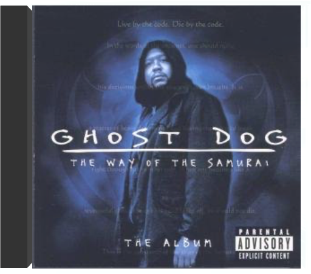

 ghost dog: the way of the samuraighost dog  Douze inédits signés RZA, le maître du Wu-Tang Clan, inspirés du fameux film de Jim Jarmush. Hormis la clique du Wu et ses célèbres lyrics mystiques gravés sur le bitume de Shaolin (Staten Island, NYC), on a droit ici à la présence de sacrés clients du mic' : Kool G Rap et le duo de Brooklyn Jeru & Afu Ra. Pour ce qui est de la musique, pas de surprise : les fans de RZA seront comblés. Samples de bonne vieille soul, avec craquements de vinyl inclus, sons torturés dans la cave, beats sans la moindre fioriture : tous les ingrédients de Bobby Digital sont réunis ici. Á noter que les interludes sont des extraits du livre qui est à l'origine du film, autant de préceptes de guerrier zen lus par Forrest Whitaker ou plutôt par son personnage de samouraï contemporain new-yorkais. —José Guerreiro  Ghost Funk Orchestra are a mystery. Plain and simple. Dirty, soulful production, verbed and fuzzed out guitars, mysterious vocals that feel like a lost score to a Quentin Tarantino film. The brainchild of one-man producer/musician/arranger Seth Applebaum, GFO is forging new territory and blurring the line between soul and psychedelic. |  Si on se laisse prendre au jeu des percussions, on est assez éloigné du titre du projet. Mais si on avance un peu plus, pour laisser entrer le bandonéon, on est cuit : le tango a pris une drôle de revanche. Avec des plages comme "La Del Ruso" ou l'adaptation de "Chunga's Revenge (signé Frank Zappa), la musique de Gotan Project prend des ailes. Des allures d'oiseau merveilleux, planant par-dessus les frontières de genre, avec un cœur qui bat au rythme de la milonga argentine. Piano, violon, guitare viennent rejoindre le festin, une célébration joyeuse de la rencontre de l'électronique et du tango. Au cœur du dispositif, un génie multi-instrumentiste nommé Philippe Cohen Solal, un drôle de clavier dubbeur insatiable, et bassiste puissant, et le délicat guitariste Eduardo Makaroff. Le trio, en invitant quelques figures du tango argentin (Nini Flores au bandonéon, la chanteuse Cristina Vilallonga...) vont produire cette aventure exaltante, où la musique va aussi servir d'écho à quelques cris de guerre et de révolte. "Queremos Paz" ou "El Capitalismo Foráneo", avec leur groove obsédant de tango du 3e millénaire, prennent soudain une douloureuse résonance, dans l'Argentine ruinée de l'année 2001. —José Ruiz  En 1994, une bande de morveux californiens sortent leur troisième album, Dookie, et se trouvent pris entre deux feux. D'un côté les adolescents, qui les adorent. De l'autre, ceux qui ont connu la première vague punk et accusent Green Day de n'être que de mauvais copieurs. A tort, car le trio a de l'énergie brouillonne et de l'attitude à revendre, cultive l'humour potache d'un goût douteux, via ses vidéos, et connaît les trois même accords de guitare que les Ramones. Et surtout, ils savent écrire de petits brûlots teigneux, qui procurent un plaisir immédiat, malgré des paroles grinçantes ou carrément noires. "Basket Case" est un festival de batterie cognant dur et de guitares simplistes autant que réjouissantes. "Longview" alterne le semi-calme et la cacophonie, formule usée, mais qui produit ici son petit effet. "When I Come Around", ses riffs et son tempo plus élaborés, clouera le bec aux détracteurs. Punk ou pas, qui s'en soucie ? Green Day demeure un grand groupe de pop garage. —Isabelle Chelley |

Julien
Collection Total:
2 016 Items
2 016 Items
Last Updated:
Dec 23, 2023
Dec 23, 2023


 Made with Delicious Library
Made with Delicious Library